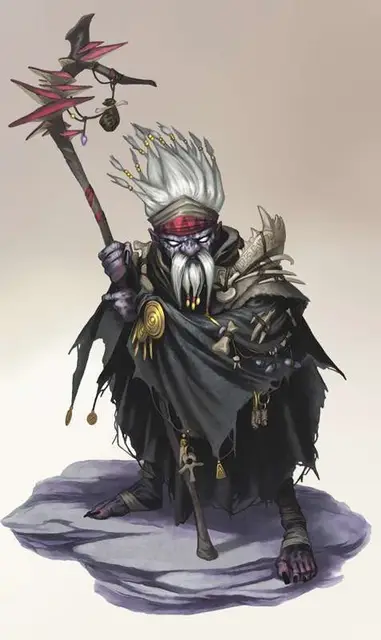

Дерро савант
Derro Savant
Маленькая Аберрация (Чародей), обычно хаотично-злая

Класс Доспеха 13 (кожаная броня)
Хиты 36 (8к6 + 8)
Скорость 30 футов
| мод | спас | ||
|---|---|---|---|
| СИЛ | 9 | −1 | −1 |
| ЛОВ | 14 | +2 | +2 |
| ТЕЛ | 12 | +1 | +1 |
| мод | спас | ||
|---|---|---|---|
| ИНТ | 11 | +0 | +0 |
| МДР | 5 | −3 | −3 |
| ХАР | 14 | +2 | +2 |
Навыки Скрытность +4
Чувства тёмное зрение 120 футов, пассивное Восприятие 7
Языки Дварфийский, Подземный
Опасность 3 (700 опыта)
Бонус мастерства +2
Среда обитания Подземье
Особенности
Сопротивление магии. Дерро совершает с преимуществом спасброски от заклинаний и прочих магических эффектов.
Чувствительность к солнечному свету. Находясь на солнечном свету, дерро совершает с помехой броски атаки, а также проверки Мудрости (Восприятие), полагающиеся на зрение.
Действия
Боевой посох. Рукопашная атака оружием: +1 к попаданию, досягаемость 5 фт., одна цель. Попадание: 2 (1к6-1) дробящего урона.
Цветной луч. Дерро выпускает яркий луч магической энергии линией шириной 5 футов и длиной 60 футов. Каждое существо на линии должно совершить спасбросок Ловкости Сл 12, получая 21 (6к6) урона излучением при провале или половину этого урона при успехе.
Использование заклинаний. Дерро накладывает одно из следующих заклинаний, используя Харизму в качестве базовой характеристики (Сл спасброска от заклинаний 12):
• Неограниченно: волшебная рука [mage hand], сообщение [message], фокусы [prestidigitation];
• 1/день каждое: невидимость [invisibility], усыпление [sleep], паук [spider climb].
Описание
“Пожиратели разума должны быть остановлены. Они сеяли ужасы в бесчисленных мирах, и целые группы людей мутировали в результате экспериментов иллитидов. Таковы и дерро.
Всякий раз, когда я встречал их, я отказывался драться, какими бы жестокими они ни были. Я думаю о дварфах, которыми они когда-то были. и должен признаться, что даже я пролил слезы”.
— Морденкайнен
Дерро крадутся по подземным царствам в поисках мест, которые обезопасили бы их от опасностей Подземья. Одинаково страшные и порочные группы этих дварфоподобных существ нападают на тех, кто слабее их, выказывая сдержанное почитание тем, кого они считают более могущественными. Заросший, осунувшийся, дрожащий и бедно одетый одинокий дерро кажется жалким существом, но когда клекочущие, плюющиеся, рычащие, воющие орды этих тварей нападают это зрелище внушает одновременно и страх, и отвращение.
Склочные в группах и слабые раздельно, дерро бы давно вымерли, если бы не две черты их характера. У них есть врождённая склонность к паранойе, и эта особенность хорошо служит им, поскольку они ориентируются в опасностях Подземья и его обществ. Помимо этого, у них превышающая норму склонность к совершенству чародейских способностей. Те, у кого они проявляются и становятся лидерами, более известными как саванты.
Амбициозные мечты и безудержный фанатизм скрыли истинное происхождение дерро даже от них самих. Большинство дварфов не признают в дерро собратьями, но в легендах, которые дерро рассказывают о своей расе и истории, в которую верят дуэргары, есть общее зерно истины. Согласно некоторым историям дуэргаров, дерро произошли из клана дварфов, что были оставлен позади, когда другие сбежали из-под власти пожирателей разума. Эти дварфы были настолько искажены псионической силой пожирателей разума, что дварфы стали Аберрациями.
Дерро рассказывают свою собственную историю о жизни и выживании в Подземье, и в них свежеватели разума не всегда выступают врагами. Ладугуэр и Глубинная Дуэрра не играют в их истории никакой роли. Вместо них их история повествует о двух братьях, Дииринке и Диинкаразане [Diinkarazan], и о том, как Дииринка предал своего брата, и благодаря этому украл магическую силу у того зла, от которого они сбежали. Опасность, с которой встретились братья, в этих легендах не одна и та же, и зависит от того, против кого хотят вести свой народ саванты, но всё же суть истории не меняется: он даёт урок того, что выживать нужно любой ценой и примером того, как коварство и жестокость могут быть добродетелями.